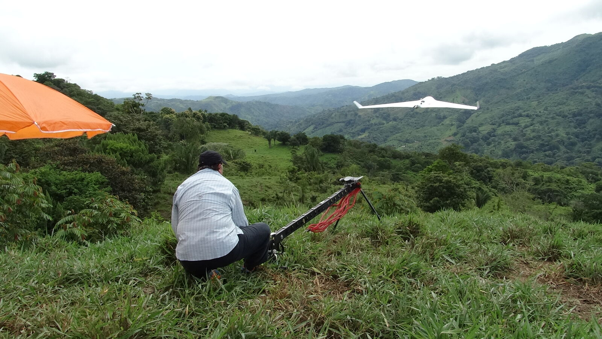
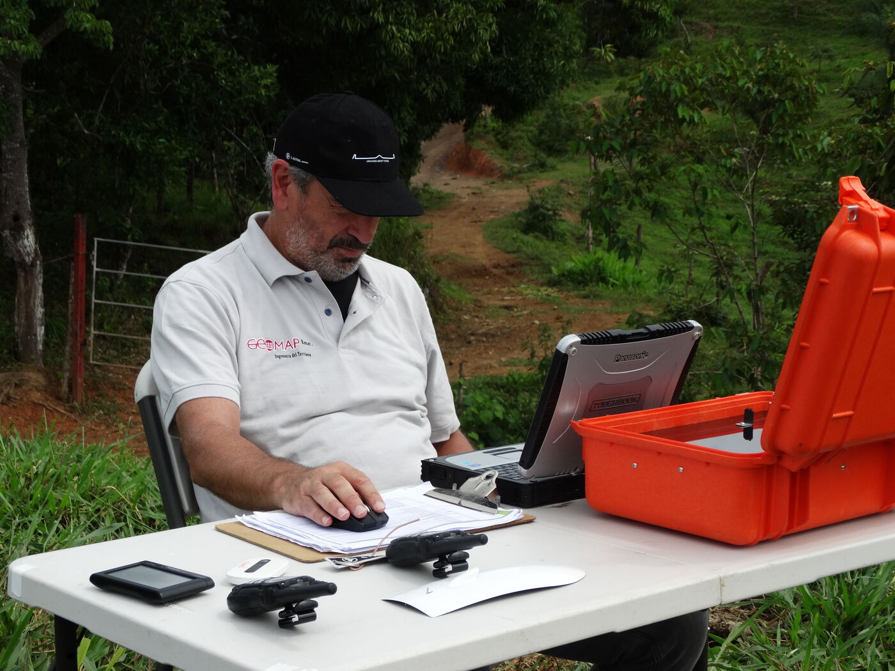
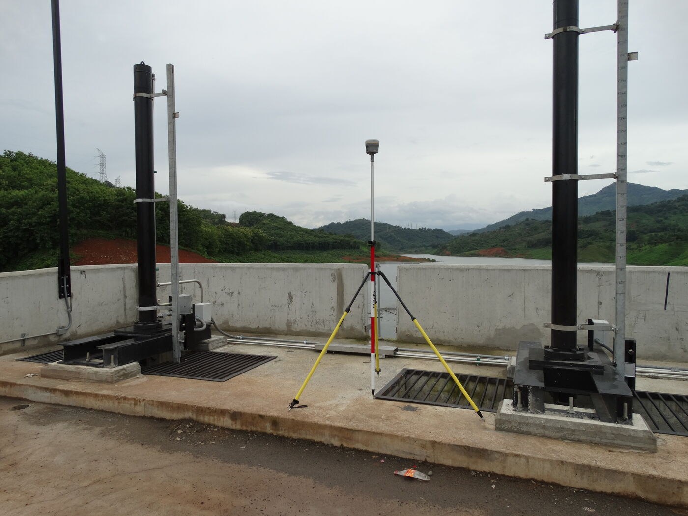
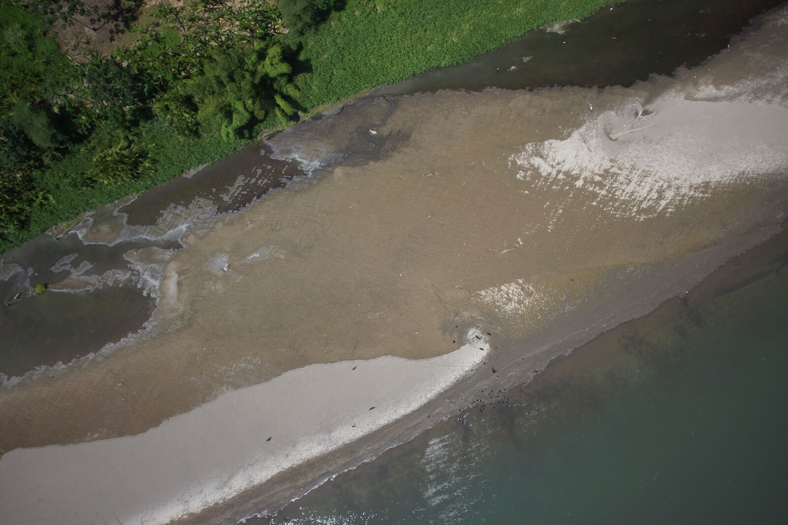

Nosotros
Un equipo de varias disciplinas
GeoMap Inc. S.A. se formó para dar respuesta a empresas e instituciones que necesitan información del territorio acorde con el desarrollo tecnológico e infraestructural de Panamá y de la región.
El equipo reúne agrimensores, ingenieros civiles y ambientales, especialistas en SIG y teledetección y desarrolladores. Esa mezcla es lo que permite que un mismo encargo pase del apoyo geodésico al estudio registral y de ahí a una aplicación web sin cambiar de proveedor ni perder información por el camino.

Vuelo de ala fija · control desde estación terrena
El equipo
Disciplinas que trabajan juntas
Los proyectos del territorio rara vez caben en una sola especialidad. Según lo que pida el encargo, se arma el equipo con los perfiles que hagan falta y uno de ellos queda a cargo de la coordinación.
Agrimensura y geodesia
Redes de control, mensuras, replanteo y todo lo que exige firma profesional ante los organismos competentes.
Ingeniería civil
Lectura del proyecto de obra: qué precisión necesita cada producto y para qué cálculo se va a usar después.
Ingeniería ambiental
Estudios de impacto y factibilidad ambiental, línea base del medio físico y planes de manejo.
SIG y teledetección
Modelos de datos, procesamiento de imágenes ópticas y de radar, análisis espacial y cartografía temática.
Desarrollo de software
Plataformas WebGIS, servicios de mapas y aplicaciones de campo, construidas sobre herramientas de código abierto.
Investigación tenencial
Estudio de títulos y fincas colindantes, y convalidación de la información registral con la espacial.
Instrumental
Instrumental propio
Operamos equipos propios en aire, tierra y agua, lo que nos permite sostener campañas largas y repetir una medición cuando el control de calidad lo pide.
- ▸Receptores GNSS geodésicos de doble frecuencia, en RTK y post-proceso
- ▸Estaciones totales y niveles ópticos y digitales
- ▸Embarcación propia equipada para batimetría y estudios bentónicos
- ▸UAV multirrotor DJI Matrice 210 RTK para inspección de detalle
- ▸UAV de ala fija C-ASTRAL para cobertura de grandes superficies
- ▸Sensores RGB, multiespectral, hiperespectral, térmico y de gas
- ▸Sistema de mobile mapping con captura 360°, IMU y GNSS




Alianzas
Socios tecnológicos y operativos
C-ASTRAL Aerospace
Empresa aeroespacial eslovena, uno de los líderes del mercado de sistemas aéreos no tripulados de pequeño y mediano porte. Su plataforma de ala fija es la que usamos para cubrir grandes superficies en una sola campaña.
Estudio Terra S.A. — Argentina
Ingeniería del territorio en el Cono Sur: obras viales e hidráulicas, relevamientos de precisión y proyectos catastrales. Compartimos metodología y equipo técnico en los proyectos regionales.
Software de código abierto
Construimos las plataformas sobre estándares y herramientas abiertas. El cliente conserva su dato, su sistema y la posibilidad de llevárselo a otro proveedor, sin licencias que renovar ni cuotas que crezcan con el uso.
Dirección
Quién responde por el proyecto
Agrim. Juan Maggi
CEO y representante legal
Dirección técnica de los proyectos de geodesia, catastro y cartografía, y relación directa con las instituciones contratantes.
Oficina técnica
Ciudad de Panamá + enlace en Europa
Procesamiento fotogramétrico, teledetección y desarrollo de plataformas WebGIS, con capacidad de trabajo continuo entre husos horarios durante las campañas.
Conversemos sobre su proyecto
Antes de presupuestar preferimos entender bien el alcance: qué se va a medir, con qué precisión y para qué se va a usar el resultado.